New seasonal forests Intact illustrated broadleaf and conifer crowns placed in shared world coordinates. Summer and winter use the same tree positions/species; 2×/4× Lanczos exports preserve whole crowns across forest joins.
Provisional candidates. Periodic neighborhoods repeat and summer reads as open woodland. Defaults below apply only with six grass/snow neighbors; connected areas require their matching profiles. Runtime selection, other ground transitions, map-scale variation and release acceptance remain open.
Review and verification · Context and geometry contract · Hamlets · Terrain · Manifest
forest · isolated default forest_w · isolated default summer-isolated-parity0 summer-isolated-parity0-2x.png summer-isolated-parity0-4x.png summer-isolated-parity1 summer-homogeneous-parity0 summer-homogeneous-parity0-2x.png summer-homogeneous-parity0-4x.png summer-homogeneous-parity1 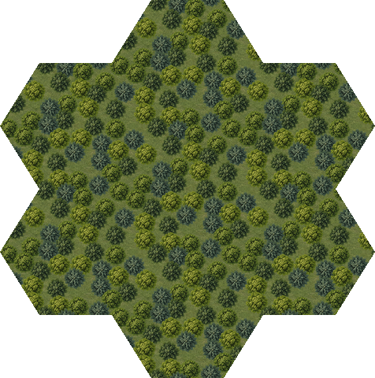
summer-homogeneous-parity1-2x.png summer-homogeneous-parity1-4x.png summer-frontier-parity0 summer-frontier-parity0-2x.png 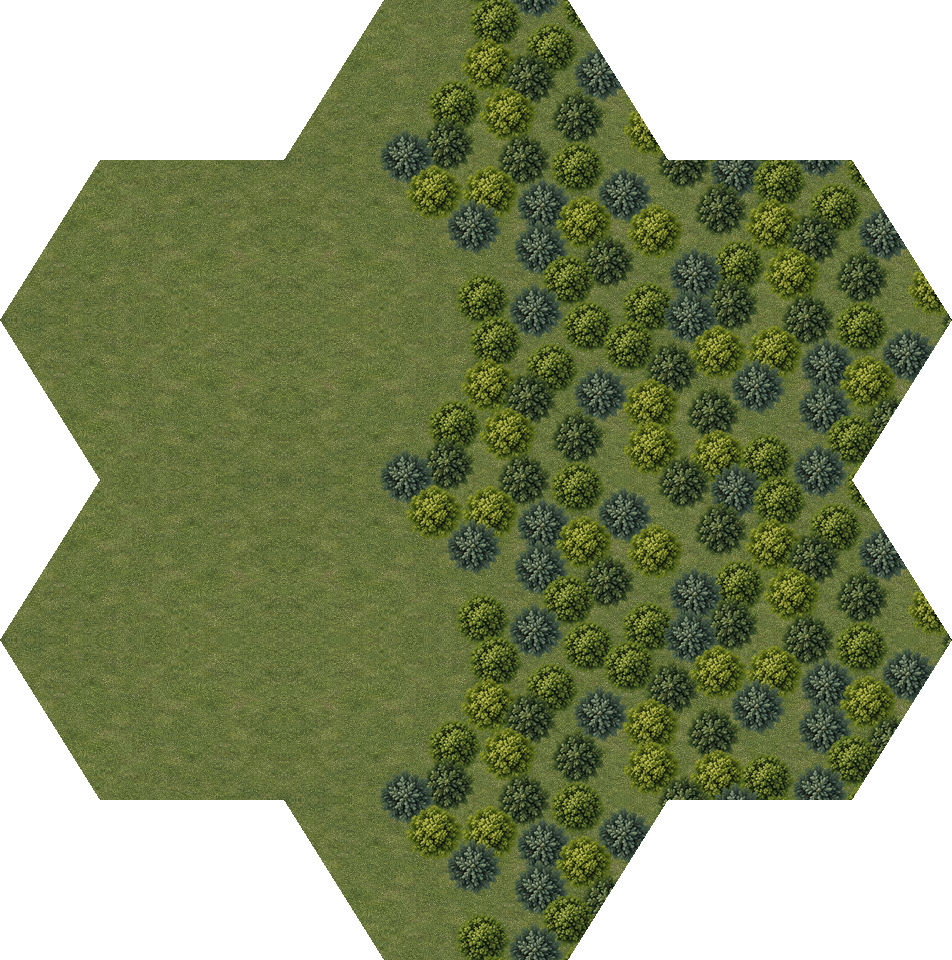
summer-frontier-parity0-4x.png summer-frontier-parity1 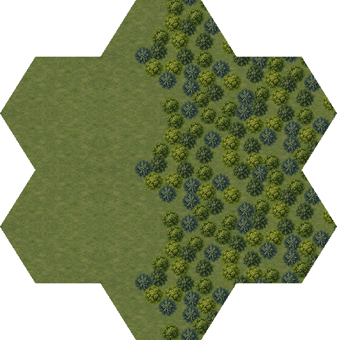
summer-frontier-parity1-2x.png summer-frontier-parity1-4x.png summer-clearing-parity0 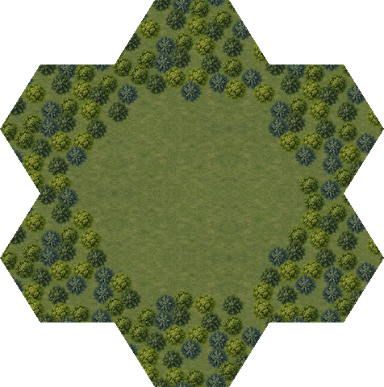
summer-clearing-parity0-2x.png summer-clearing-parity0-4x.png summer-clearing-parity1 summer-clearing-parity1-2x.png 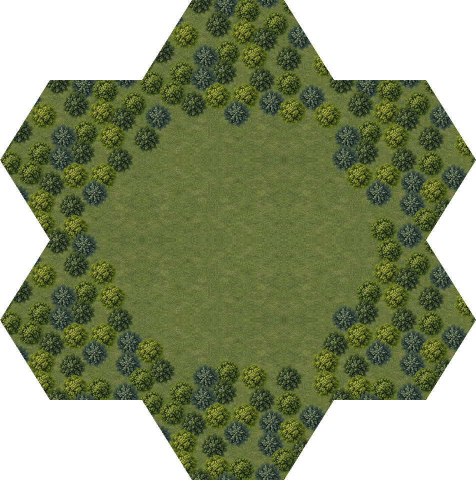
summer-clearing-parity1-4x.png winter-isolated-parity0 winter-isolated-parity1 winter-isolated-parity1-2x.png winter-isolated-parity1-4x.png winter-homogeneous-parity0 winter-homogeneous-parity1 winter-homogeneous-parity1-2x.png winter-homogeneous-parity1-4x.png winter-frontier-parity0 winter-frontier-parity0-2x.png winter-frontier-parity0-4x.png winter-frontier-parity1 winter-clearing-parity0 winter-clearing-parity0-2x.png winter-clearing-parity0-4x.png winter-clearing-parity1 summer · actual hamlet in clearing winter · actual hamlet in clearing forest · context ab53ce96f25b NE, SE, S, SW, NW, N: [forest forest forest forest forest forest]
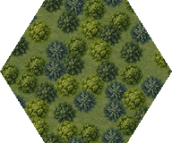
ab53ce96f25b46e568e8598b6ea0f237dfa4acd63361f56538697f0af32dea36-2x.png 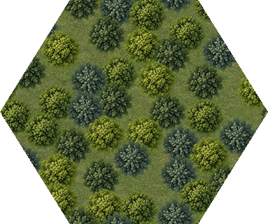
ab53ce96f25b46e568e8598b6ea0f237dfa4acd63361f56538697f0af32dea36-4x.png forest · context 85072fe1d280 NE, SE, S, SW, NW, N: [forest forest forest grass grass forest]
85072fe1d28054aa2f75a5387301859650de1e93959e77b02f4414d3481370a2-2x.png 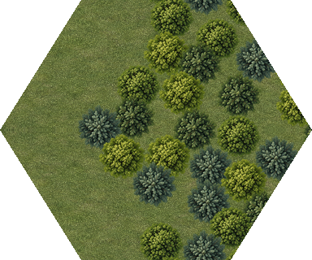
85072fe1d28054aa2f75a5387301859650de1e93959e77b02f4414d3481370a2-4x.png forest · context e9ed20dae4ee NE, SE, S, SW, NW, N: [forest forest forest grass forest forest]
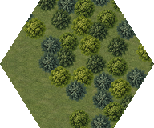
e9ed20dae4eed5cfb6da619c8d58e9499e90505e0fd754683f0a688308f46bce-2x.png 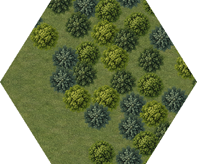
e9ed20dae4eed5cfb6da619c8d58e9499e90505e0fd754683f0a688308f46bce-4x.png forest · context a20c883ec22b NE, SE, S, SW, NW, N: [forest forest forest forest grass forest]
a20c883ec22be4e573446efb8b9e27277310ece4fed45653149dd07fcfe3481c-2x.png 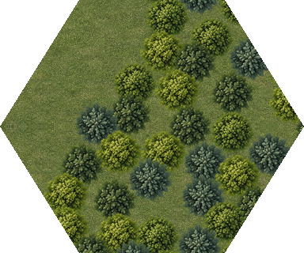
a20c883ec22be4e573446efb8b9e27277310ece4fed45653149dd07fcfe3481c-4x.png forest · context da3403b242df NE, SE, S, SW, NW, N: [forest forest forest forest forest grass]
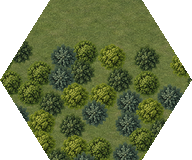
da3403b242df52f939e369b174e5adcb5f7b585ccdb807829396fce37d96293a-2x.png 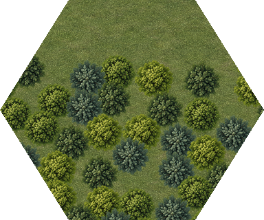
da3403b242df52f939e369b174e5adcb5f7b585ccdb807829396fce37d96293a-4x.png forest · context cc8e67e7ad50 NE, SE, S, SW, NW, N: [grass forest forest forest forest forest]
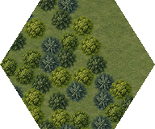
cc8e67e7ad50f7a7b7b182f2a7f256b037bd3fa5dfc4844b94c31af62bf4df32-2x.png 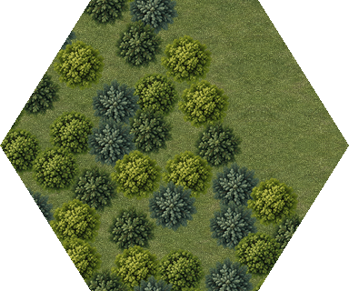
cc8e67e7ad50f7a7b7b182f2a7f256b037bd3fa5dfc4844b94c31af62bf4df32-4x.png forest · context 4ad426ea935a NE, SE, S, SW, NW, N: [forest grass forest forest forest forest]
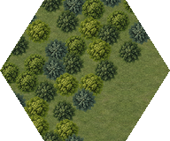
4ad426ea935a132eb67074836e888b670708bbc8c0fbfc8a447c94754e240f3a-2x.png 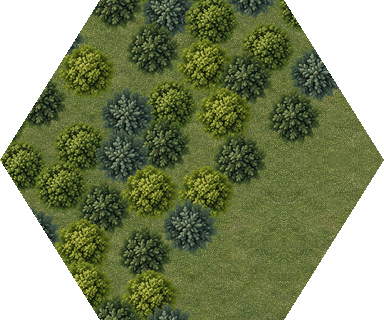
4ad426ea935a132eb67074836e888b670708bbc8c0fbfc8a447c94754e240f3a-4x.png forest · context e7d015e04423 NE, SE, S, SW, NW, N: [forest forest grass forest forest forest]
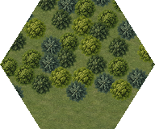
e7d015e0442392883965c03c89d30245e9176347d9f2b0a30d016074d42fbae6-2x.png 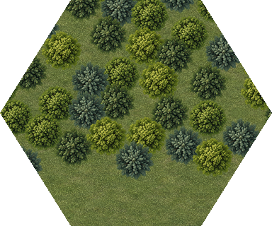
e7d015e0442392883965c03c89d30245e9176347d9f2b0a30d016074d42fbae6-4x.png forest_w · context 06e7993a4cf4 NE, SE, S, SW, NW, N: [forest_w forest_w forest_w forest_w forest_w forest_w]
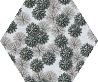
06e7993a4cf4c3d1763c20e0dc7e062d32598a7c8df309ad30e0092218825a02-2x.png 06e7993a4cf4c3d1763c20e0dc7e062d32598a7c8df309ad30e0092218825a02-4x.png forest_w · context 857d1be4d0b8 NE, SE, S, SW, NW, N: [forest_w forest_w forest_w grass_w grass_w forest_w]
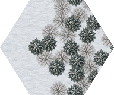
857d1be4d0b890dc5bab418164c4fb1325d7541c24d253db0d364f7933e2a5b7-2x.png 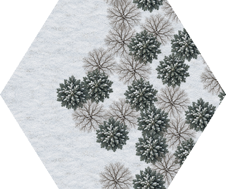
857d1be4d0b890dc5bab418164c4fb1325d7541c24d253db0d364f7933e2a5b7-4x.png forest_w · context 6d4033a52f5f NE, SE, S, SW, NW, N: [forest_w forest_w forest_w grass_w forest_w forest_w]
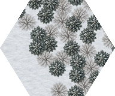
6d4033a52f5f40bd9c396f5eecc104f4f856ef6f2f138e053085ba987ccdb7b5-2x.png 6d4033a52f5f40bd9c396f5eecc104f4f856ef6f2f138e053085ba987ccdb7b5-4x.png forest_w · context 53b13f4044c9 NE, SE, S, SW, NW, N: [forest_w forest_w forest_w forest_w grass_w forest_w]
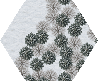
53b13f4044c9da639bf182b4ec1bfd6908c8e474b795e8762d7cceff02ef9a23-2x.png 53b13f4044c9da639bf182b4ec1bfd6908c8e474b795e8762d7cceff02ef9a23-4x.png forest_w · context 0c258a479335 NE, SE, S, SW, NW, N: [forest_w forest_w forest_w forest_w forest_w grass_w]
0c258a479335287ec16118c7f7a27b3b047c75af9e2393a35446e20074b7c6bf-2x.png 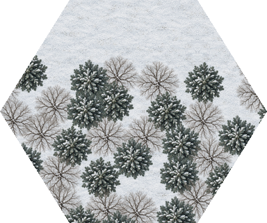
0c258a479335287ec16118c7f7a27b3b047c75af9e2393a35446e20074b7c6bf-4x.png forest_w · context b37aeac713dc NE, SE, S, SW, NW, N: [grass_w forest_w forest_w forest_w forest_w forest_w]
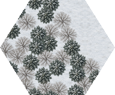
b37aeac713dc58c66402f2fe0defb2c5d667dab3e6df1a49636bc209f0904db2-2x.png b37aeac713dc58c66402f2fe0defb2c5d667dab3e6df1a49636bc209f0904db2-4x.png forest_w · context 4c7599cadfd5 NE, SE, S, SW, NW, N: [forest_w grass_w forest_w forest_w forest_w forest_w]
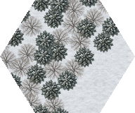
4c7599cadfd534b8978b52d44783efe66cc67c3d5ff990df54815321bcc2944d-2x.png 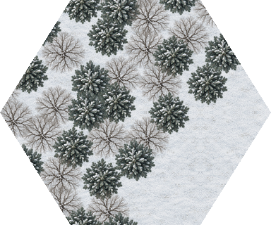
4c7599cadfd534b8978b52d44783efe66cc67c3d5ff990df54815321bcc2944d-4x.png forest_w · context f4aee3adaf49 NE, SE, S, SW, NW, N: [forest_w forest_w grass_w forest_w forest_w forest_w]
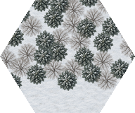
f4aee3adaf49db30b7522e47bccd42dddd7f7b03adb61a5098ad251b17a22308-2x.png f4aee3adaf49db30b7522e47bccd42dddd7f7b03adb61a5098ad251b17a22308-4x.png